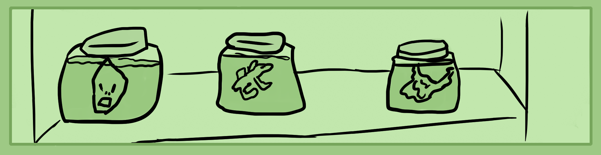
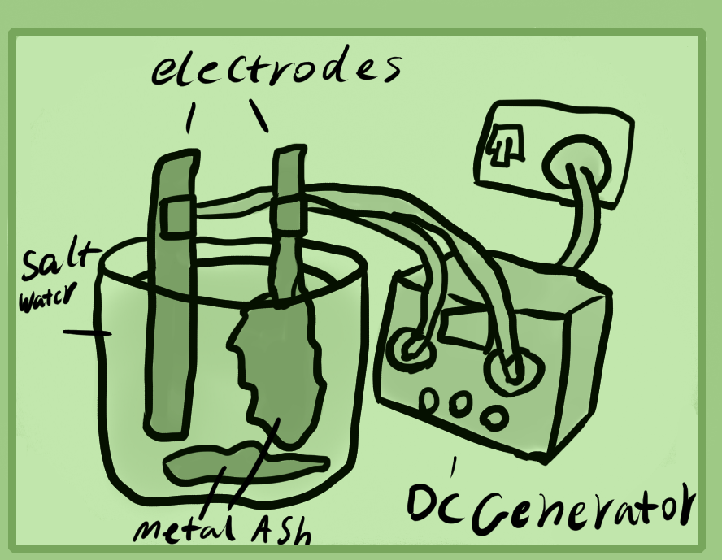

Tinctures are a good liquid way to ingest refined alchemical recipes. They can be made with all three kingdoms of materials and are preserved with alcohol. Personally I'd rather eat a pill made out of herbal resin, though tinctures are quite popular so I've added them here.
There are many ways to make tinctures. Depending on the ingredients will change how you make it.
Firstly I'll run over how herbal tinctures can be made.
Herbal Tinctures
The first kind of herbal tincture is a simple alcohol tincture. There is a cold and hot method. This requires either a soxhlet or a sealable boiling flask if you do it the hot way.
For both methods you'll want to grind up and powderise your herbs. After that, for the cold method, add this herbal powder to a bottle of 35-95% alcohol. Use around 5-10% of the bottles size in herbs. Now all you need to do is keep it in a warm area where light hits it and shake the bottle every day for around 2 weeks to a month.
Herbal Tinctures - Hot
Hot tinctures require heating your herbal and alcohol mixture usually in sealed glass as the alcohol will escape in other cookware. Make sure to open the glass stopper every 20 minutes. Do not ever try to force it open as gas can build up and scold you.
Pour some alcohol in your soxhlet or boiling flask and add the herbal powder as well, around 5-10%. Set up your chemistry stand and heating element. I recommend an alcohol lamp or hot plate. Keep it heating on below a simmer. Make sure the glass stopper is always loose as to let out excess air if need be.
Allow this mixture to warm for around 1-4 hours. Then let it cool for about half an hour to an hour before you open the glassware and strain your alcohol.
The same kind of process can be done used with animal ingredients as well.
Herbal Tinctures - Chemical
Chemical tinctures are the same as hot tinctures but that you add chemicals during certain parts of the process.
To chemically extract, mix 35-70% alcohol with potassium carbonate and calcium oxide. Around a teaspoon per litre. You can also use potassium hydroxide instead of both of the other chemicals. Use half a teaspoon. This mixture draws out all of the oils and helps to dissolve most herbs and even animal parts. It is a form of "Alkahest".
Once the chemical liquid is created, pour it into your soxhlet or boiling flask along with the herbs, 5-10%. Keep this heated for around 1-4 hours, making sure to relieve the pressure inside every so often, never opening the cap if it is stuck. Let it cool instead first.
Once it's finished, let it cool. Add white vinegar to this mixture to neutralize the alkalinity. Keep checking it with a ph strip or measurer to see it's ph. Get it to around a 7 ph to make it safe to drink.
I personally do not recommend using the chemical method for ingestion purposes since it tasts like chemicals. If you can extract something with water or alcohol, it's best done with that.
Herbal Tinctures - Spagyric
This one is a bit tricky as it's debated as to what a real spagyric tincture really is. Supposedly a spagyric tincture is the alcohol, oil and salt of a specific herb, mineral or animal part. My personal debate with it is if they were intending to use the plant salts as a chemical extraction method as we did in the past section or if they actually want to just use the salt as a way to add minerals to the tincture. Either way I'll teach you the method so you can decide for yourself.
First begin by making a herbal sugar wine by concocting herbs in water and then adding sugar until it is about as sweet as juice. Then add sugar yeast once it cools and allow it to ferment for two weeks plus.
Once your wine has finished brewing, distill off the alcohol. This will also denature the yeast left over. Now separate the remaining herbal liquid from its solids. You should have three parts. 1. Distilled spirits, 2. Herbal liquid, 3. Herbal solids.
Take your herbal solids and burn them outside or under a kitchen fume hood. I personally use a metal plate. you can also use a pan or wok if it can handle high heat. Let them burn black, then grey, then white if possible. Grind up your calcined herbs.
Now you have the three main parts. Unrefined ash, unrefined essence (the herbal liquid) and partly refined alcohol. If you want to preserve this mixture more, heat the herbal liquid to remove around half of its water.
Add all three of these together and allow any solids to fall down the bottom. Strain your tincture from its solids, mostly spent ash and other impurities. This is one method for spagyrics.
Another method for spagyrics is to soak herbs in 35-70% alcohol and either perform a hot or cold extraction. Then when the oil essences are extracted, strain the liquids from the solids and calcine the solid herbs. Then you can either mix the grey-white ash into the alcohol tincture or refine these ashes into their crystal salt with water as explained in the calcination chapter.
Animal Tinctures
As explained, you can also make animal tinctures in the same method as herbal ones mentioned above. You mince or grind the animal material and then perform either the hot, cold, chemical or spagyric method. Except there are some differences for the spagyric and chemical method which will be explained.
Animal Tinctures - Chemical
The spirit of the animal kingdom is ammonia. You can buy refined ammonia of around a 5% concentration to use as an extraction agent.
To make chemically extracted animal tinctures, start with either ground, minced or powdered animal ingredients and put them in a clay or glass cookware or boiling flask. Metal can be damaged by the ammonia. Then add a mixture of 80-90% water and the rest, dilute ammonia. Bring this up to a boil and then reduce to a simmer. If cooking in glass, keep the cap off so that the ammonia can escape. Keep this simmering or sub-simmering for about 1-2 hours to extract all of the essence.
Allow it to cool and strain off the liquid, chuck the solids. Add 35-95% alcohol to preserve. If you have too much water in your animal liquid before adding alcohol then first simmer it further to reduce it. This helps to preserve it longer. Also make sure all the ammonia is cooked away before adding alcohol.
Animal Tinctures - Spagyric
If you wish to make a more traditional fermented tincture, this is the way. Though, do be careful not to let anything rot or go bad. There is a difference between fermentation and preservation compared to rotting. Otherwise, just don't drink it if something goes bad.
Start out with either blood or urine. You can use your own urine. I don't recommend using your own blood as you need a lot of it. Let around 1-4 litres ferment in darkness. It needs to be open to the air or else it wont turn alkaline and produce ammonia. Adding a spoon full of hydroxide will help to turn it. This can take about a week or two. Once you've finished this you can either distill the ammonia to use for the chemical extraction method or keep it as is to use for this one.
Once you have the fermented animal liquid, put your animal guts, meat, bones or other parts inside of it and mix them together. Now you can let this mixture extract the essence either in the fridge over a week or by heating it in an open vessel.
Then similarly like other workings, strain the solids and calcine them. Either add the unrefined ashes back in or first refine them with water into their salt and re-add these.
Again, make sure to get rid of all of the ammonia before adding your salts in. After that, add alcohol to preserve it. This is your animal spagyric.
Mineral Tinctures
Mineral tinctures are a bit more chemistry intensive. It relies on you "Chellating" a mineral which means to turn it from a toxic mineral form into a palatable form for humans. Technically all mineral form metals and even ore form minerals are toxic. You "can" eat them in very small amounts if you're an experienced alchemist and body cultivator but it's much better to change them into a more palatable form. Though crystals are usually fairly edible in their crystal form. The ultimate intention is to get the minerals into their acetate and then alcohol form.
Post note - That was my old understanding of this. It kinda worked but now I have another step where you sublimate the metallic salt into its oil through a kind of plasma transmutation. So I don't recommend eating any of these mineral products. Feel free to experiment as is safe to understand how to refine minerals. Look into metallic oil recipes for safe medicinal versions. Otherwise you could get poisoned from eating some of this stuff.
Mineral Tinctures - Electrolysis Method
This is the old method I used to use which is very good if you don't have much chemistry experience or many chemicals.
To perform electrolysis you need a car battery or DC generator and two electrical clips along with a jar full of mildly salty water and two pieces of metal. You can do it with tiny pieces like rings or small ingots or with larger bars, rods, etc. Bigger is better if you can get that.
Set up your equipment outside or in a ventilated area. You want to have both electrodes in the water and the clips outside of the water otherwise your clips will electrolyse too.
Put the voltage to around 15-20 volts. Observe the processes every so often as this will take around half a day to really get a good amount of material.
You will notice that the water starts to become colored as well as clumps of matter clinging to the electrodes, this is some kind of oxide or hydroxide of the metal.
After a few hours of electrolysis you can switch off and disconnect your power source and tap the metal to get all of the oxide into the water.
Now start to add vinegar and mix it until as much oxide as possible is dissolved. Some metals might not work with this method but at least iron and copper will.
Allow for your liquid to settle for awhile until all of the extra solids have fallen to the bottom of the jar. Strain off the top liquids, leaving the bottom which can be thrown away. If you have a colored, vinegary and metalic smelling liquid, you have done this correctly.
Now you need to simmer this liquid down to a thick oily substance, making sure not to burn it. Allow this oily mud to dry in a dark closet or in the sun or oven. Then add a little bit of water to your substance and re-simmer it to a thick mud. Let it dry again. This will wash the vinegar out of it.
Finally, add 35-70% alcohol to your acetate to finish it.
Mineral Tinctures - Chemical
For this method you need to know what chemicals can dissolve which metals. Equal parts vinegar and hydrogen peroxide can dissolve iron, lead, copper and tin from memory. Otherwise sulfuric acid, hydrochloric and nitric can be used to dissolve most metals.
Try to get a powderised metal if possible, otherwise small pieces are preferable. Place your metal in a glass mason jar then pour over it your chemical for dissolving. Leave it in the jar to dissolve for as long as you can. Usually it can take up to a couple days to finish reacting and even go on for weeks if left.
Strain your colored acidic liquid into another glass, don't use metal. Volumetric flasks are good for this kind of chemistry. Now you want to heat and simmer this acid liquid in a volumetric or boiling flask until it has condensed into a thick liquid, making sure not to burn it.
Let this thick liquid dry in an oven, the sun or a dark place and it may crystalise. After crystalisation, pour vinegar over it. If you used vinegar and hydrogen peroxide to dissolve it, you don't need to do this step. Re-dry the crystal soup again. Next time, pour water over it. This should get rid of a lot of the chemical residue.
Sometimes this will not work and instead you may need to neutralize the acid with sodium carbonate to make it a metallic carbonate, then add vinegar to make it an acetate.
After you have your pure acetate crystals that are washed and free of any vinegar smell, add 35-70% alcohol to it. This is your tincture.
Other methods
The material taught thus far has mostly been the water method of making tinctures. There is also a fire method that uses dry distillation.
That method relies on large amounts of acetate crystals being dry distilled into a special oil. This is the purest way if you're able to get the equipment and figure it out. Otherwise the other methods can have chemical impurities which is why I personally don't recommend messing with mineral alchemy until you have a firm grasp of herbal alchemy.
The golden rule is don't eat or drink something if it tastes horrible and makes you sick. Always test with very small amounts. But either way. The methods I've taught have been ones that I've used previously to make mineral and other tinctures. You will eventually figure out your own as your experience and knowledge of alchemy grows.